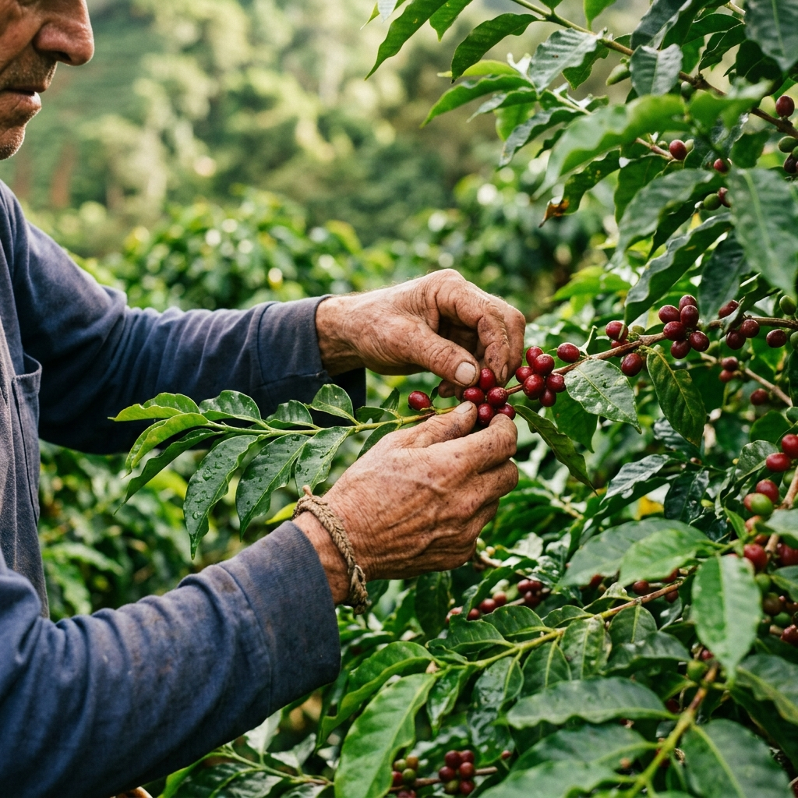
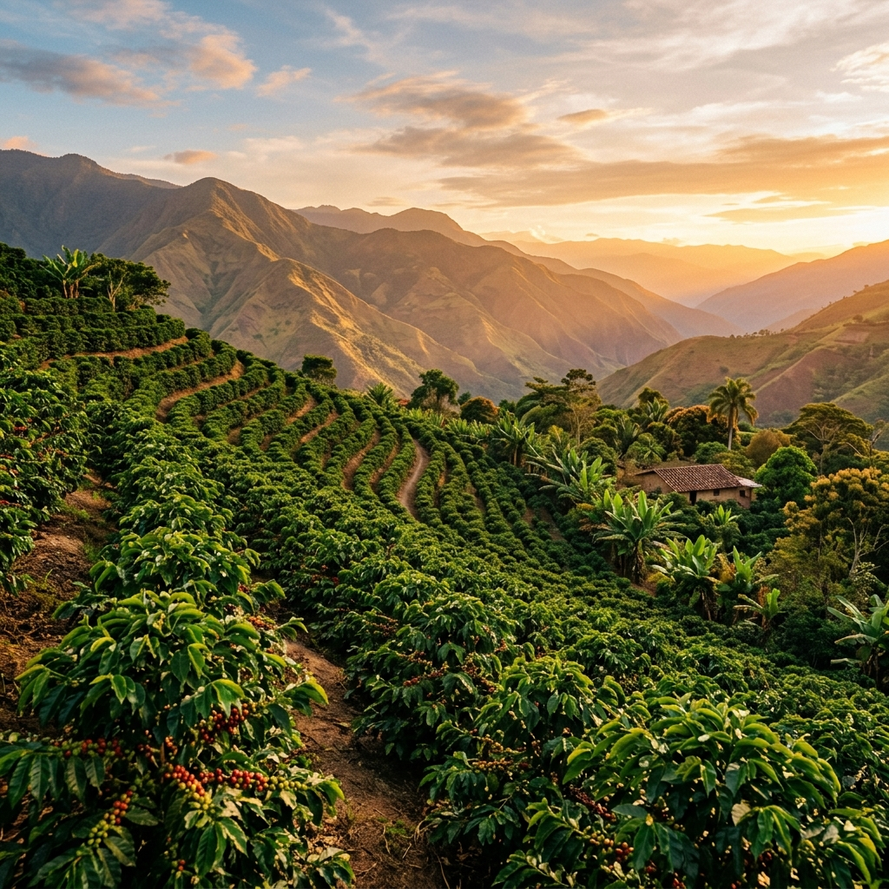
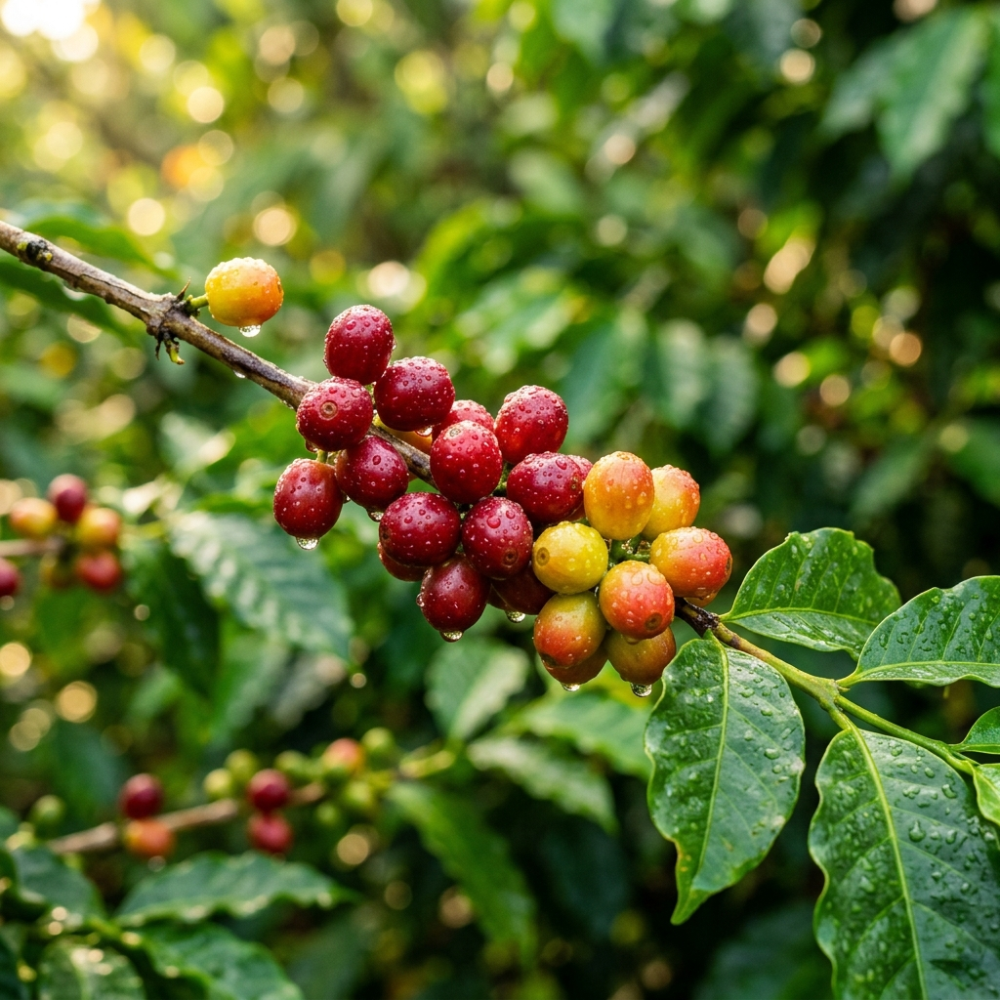
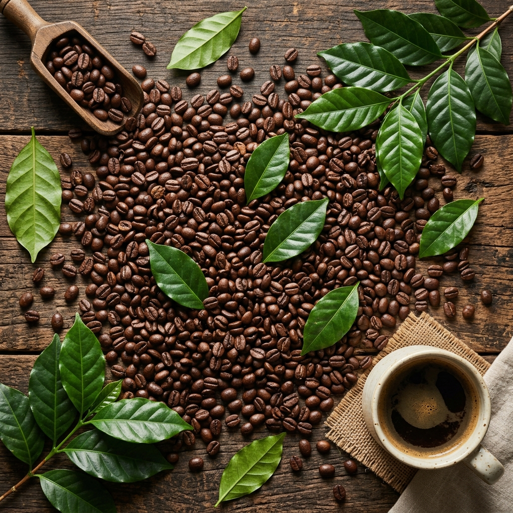
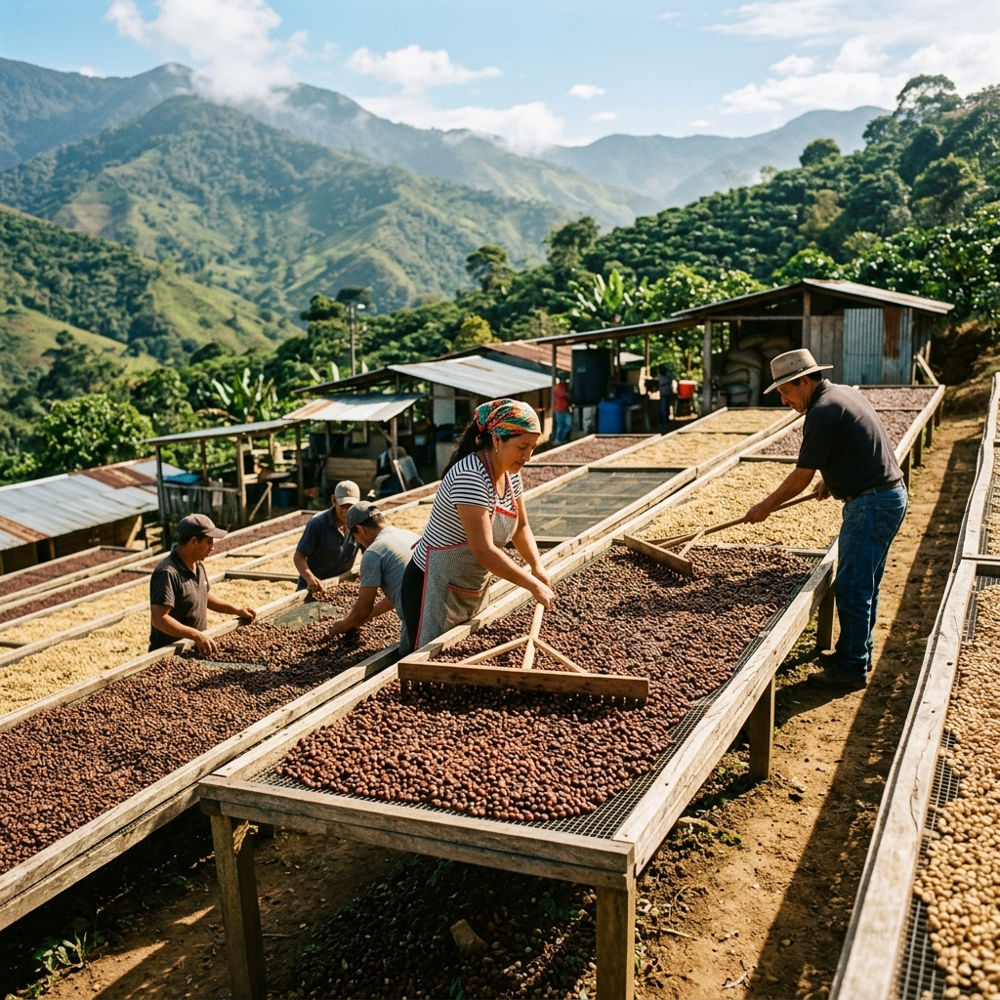
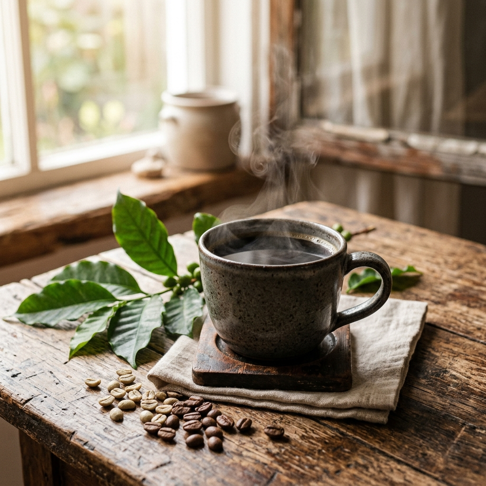

Villa Rica · Oxapampa · Perú
Café de origen, tradición familiar y una historia que comienza en la tierra.
Descubrir nuestra historia01 — Nuestra Esencia
Valle Blanco nace para compartir el sabor, la tradición y el origen del café producido en Villa Rica.

02 — Nosotros
Valle Blanco es una pequeña empresa familiar dedicada al cultivo, procesamiento y comercialización de café producido en Villa Rica, provincia de Oxapampa.
Nuestra identidad está profundamente relacionada con el origen y el proceso del café. Cada etapa refleja nuestro compromiso con la calidad y la tradición cafetalera de la región.
03 — Origen
Villa Rica ofrece un entorno privilegiado para la producción de café. El clima, el territorio y la tradición cafetalera forman parte de la identidad de Valle Blanco.
04 — Nuestro Café
Nuestro café proviene de Villa Rica, provincia de Oxapampa, una de las regiones más reconocidas del Perú por su producción cafetalera de alta calidad.
Trabajamos principalmente con las variedades Caturra y Typica, reconocidas por su perfil de sabor equilibrado, aromático y con cuerpo definido.
Nuestro café está directamente relacionado con el territorio donde es cultivado. El suelo, el clima y la altitud de Villa Rica son parte esencial de su carácter.
Dar a conocer la historia y las características del café Valle Blanco, conectando al consumidor con el origen y el proceso detrás de cada grano.
05 — Proceso
Nueve etapas que forman parte de una misma historia.
Los cafetos crecen en las laderas de Villa Rica, beneficiándose del clima tropical y la riqueza del suelo.
Cada cereza de café es recolectada a mano, seleccionando únicamente los frutos en su punto óptimo de maduración.
Los frutos cosechados se seleccionan cuidadosamente, separando los granos de mayor calidad para el procesamiento.
El café pasa por un proceso húmedo que retira la pulpa y prepara los granos para la siguiente fase.
Los granos se secan de forma controlada al sol, alcanzando el nivel de humedad ideal para preservar su calidad.
Se clasifica cada grano según su tamaño, peso y calidad, asegurando uniformidad en el producto final.
El tueste se realiza con precisión, resaltando las notas y el perfil aromático característico del café de Villa Rica.
Los granos tostados se muelen según la presentación final, conservando la frescura y los aromas esenciales.
El café se empaca con cuidado, protegiendo su calidad y preparándolo para llegar al consumidor final.
Dar a conocer un café de origen elaborado con dedicación y respeto por la tradición cafetalera de Villa Rica.
Fortalecer la presencia de Valle Blanco como una marca reconocida por su identidad y procedencia.
Tradición, calidad, cercanía, compromiso y respeto por el origen.
06 — Galería





07 — Contacto